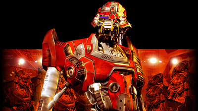

Начало > Вступление
|
Начало > Вступление
|
| Вступление Основные события второй части игры разворачиваются спустя 200 лет после окончания войны с клисанами - в 3300 году. Человечество поддерживает отношения с четырьмя другими развитыми цивилизациями нашей галактики: малоками, пеленгами, фэянами и гаальцами. Новая, еще более опасная сила угрожает галактике. На одной из планет, ранее находившихся под властью клисан, заявляет о себе крайне опасная форма кибержизни - мощные боевые роботы, не просто способные выполнять чужие приказы, но и наделенные собственным интеллектом. Одержимые своими программами, военные машины выходят в космос и принимаются сеять ужас в обитаемых мирах. |

С легкой руки людей этих роботов стали называть доминаторами. Цивилизованному миру приходится выдерживать натиск сразу трех видов доминаторов: блазероидов, келлероидов и терроноидов. Эти три ветви машинной эволюции враждуют и между собой, что только на руку войскам Коалиции. Концепция свободного выбора, отличительная особенность оригинала, не только сохранилась, но и получила в "Космических рейнджерах 2" свое логическое развитие. Игра не ограничивает вас сюжетными рамками, а предоставляет возможность повлиять на ход событий. При этом игровой мир (размеры которого существенно увеличились по сравнению с первой частью) живет и развивается по своим законам, в нем постоянно происходят какие-то события: захватываются и освобождаются системы, пираты грабят суда, на планетах случаются государственные перевороты, а ученые делают новые открытия. В "Космических рейнджерах 2" игрок также получит возможность доказать свое превосходство не только в космосе, но и на планетах. Бои на поверхности планет - это трехмерная стратегия в реальном времени. Используя огневую мощь боевых роботов, игроку предстоит противостоять доминаторам - разумным военным машинам, не знающим жалости. |